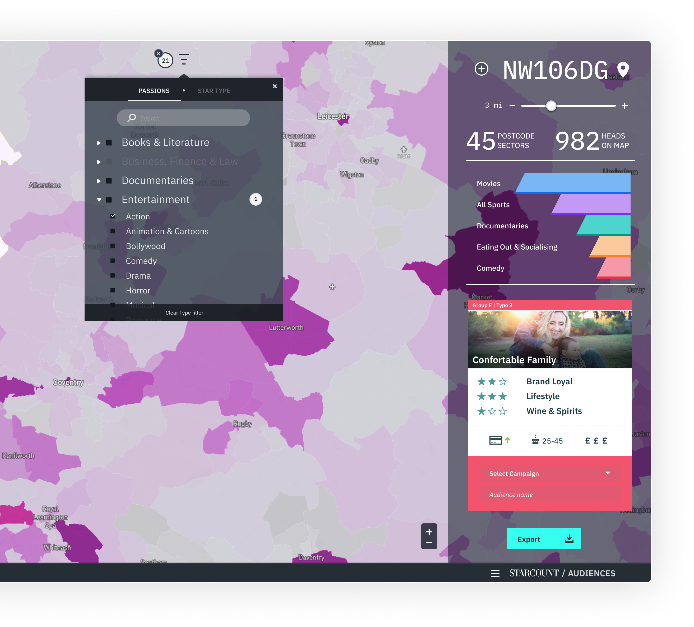
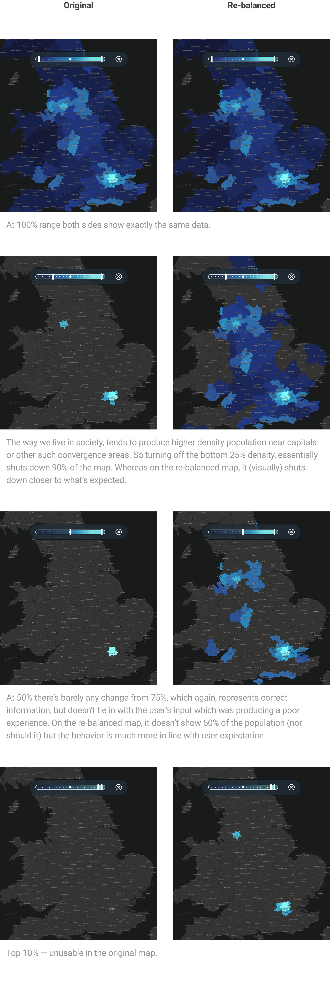
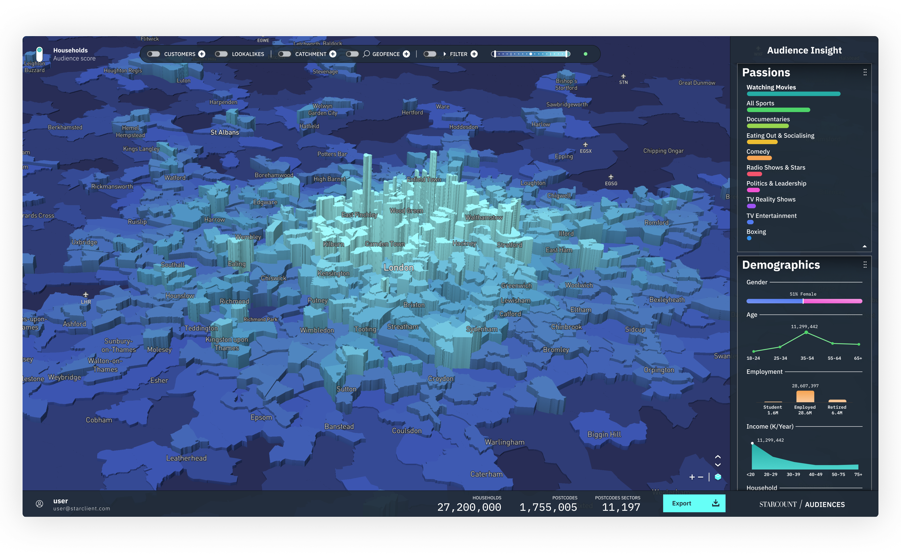

A market-targeting tool that turned an unprecedented pile of Twitter and Royal Mail data into audiences brands would pay for.
Eight months in, having redesigned the company's only product and launched another, we landed two deals nobody had done before: Twitter's first-ever agreement to train data on tweets, and Royal Mail postcode data. Toyota was waiting as a launch client.
It came with a clock. In the room, I stuck my neck out and said we'd have something to show "before the ink was dry." Now I had to build it.
Instead of guessing the product, I ran three rounds of discovery: engineering and data (what's actually possible), sales (what clients had always asked for and we could never deliver), and our closest clients directly (constraints aside — what's your wishlist?).
The overlap became the MVP: upload your own CRM, draw a catchment area, and "Lookalikes" — point at one market and infer where the next one lives.
Familiar with our other products, I patched up a v0 fast — a heatmap of population density by interest, drill-down, a persona card, CSV export. I wasn't impressed. Everyone else was. It bought us out from under the clock — and set the bar for what "really trying" could do.

Audiences v0 — the proof of concept: heatmap, persona card, export. Click to enlarge.
The heatmap was accurate: London really is far denser than everywhere else. But that made it useless — filter the map and 90% of the country went dark. Users already know London is dense; they're hunting for where the next audience lives.
So I re-balanced the map to behave the way users expected — technically less "correct," dramatically more helpful. It took real convincing with the data team. It's not often someone argues for showing the wrong number on purpose.

Accurate vs. helpful — original (left) vs. re-balanced (right) as the filter tightens. The original shuts the country off; the re-balanced map keeps it useful. Click to enlarge.
Everyone assumed people bought the Toyota Prius to be green — millions had been spent on ads full of leaves and trees. Our data said otherwise: most people bought electric for the tech. Toyota re-cut its national campaign from leaves to fibre optics and blue neon. That's the whole point of the tool — turning novel data into a decision worth making.
The heatmap was good, but flat — it lacked impact where density spiked. Bringing in a 3D element was the final piece, and it took the product to another level. Clients agreed. The product suite beat its first-year target of £1M in revenue in 91 days.

The shipped product — 3D density, live Passions & Demographics, CRM / Catchment / Geofence / Lookalikes toggles. Click to enlarge.
The lesson that stuck: correctness isn't the goal — usefulness is. The most important call on the whole product was choosing to be helpful over being accurate, because the person on the other end wasn't auditing data. They were trying to decide where to spend next.
Real screens, exported from Figma at 2×. Click any to enlarge.